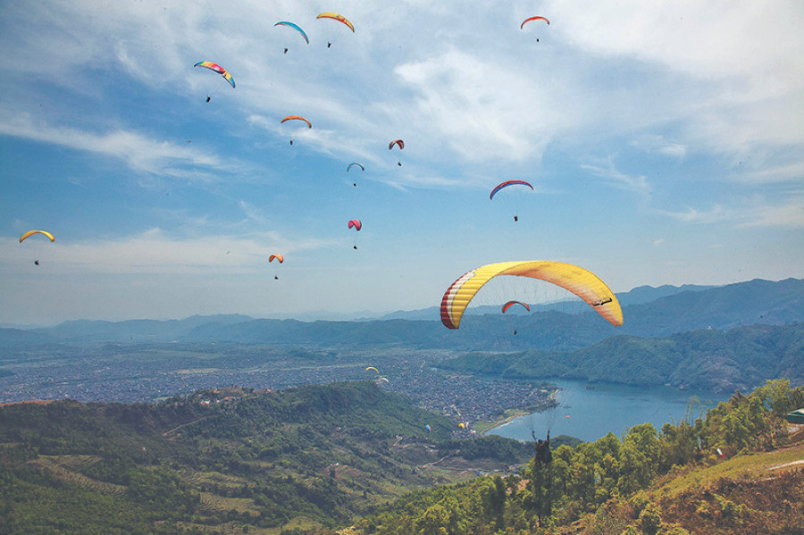
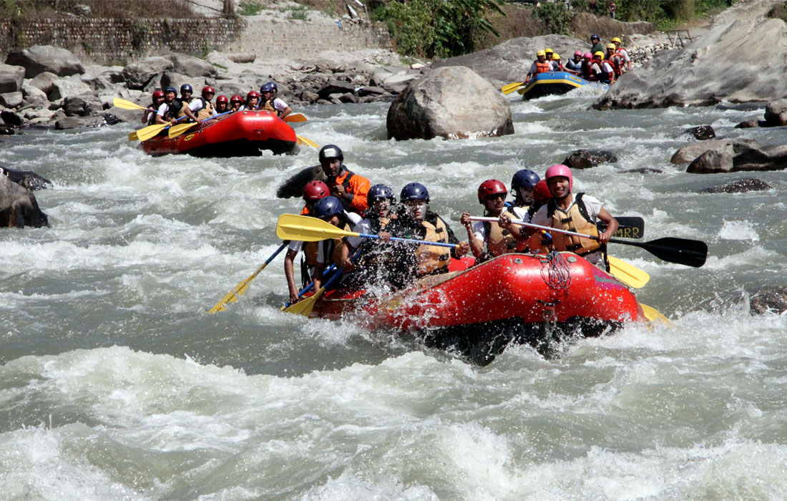
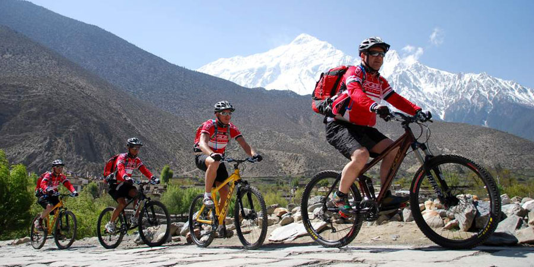
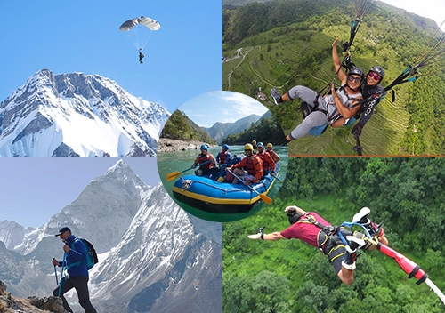
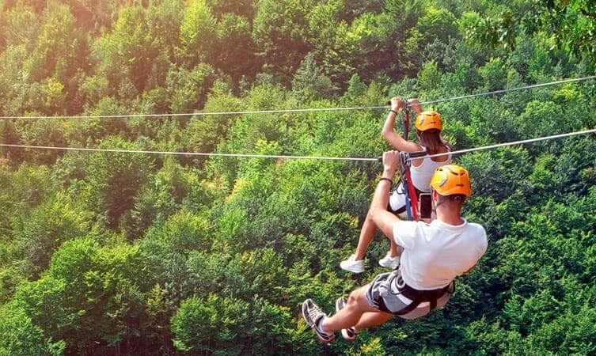

Nepal isn't just about serene temples and tranquil hikes—it's Asia's ultimate adrenaline playground. Where else can you bungee jump into a Himalayan gorge, paraglide with eagles over snow-capped peaks, whitewater raft through raging rivers, and mountain bike down the world's highest roads—all while ancient cultures watch from below? As an adventure guide who's pushed limits across five continents, I can confidently say: Nepal delivers heart-pounding experiences you won't find anywhere else on Earth.

The Adrenaline Capital of Asia
For decades, Nepal was known only as a trekking destination. Then adventure seekers discovered what locals always knew: this mountainous country offers some of the planet's most extreme and diverse adventure sports. The unique geography—from 8,000-meter peaks to tropical jungles, from raging rivers to deep gorges—creates natural adventure arenas that simply don't exist elsewhere. I've guided clients who've done skydiving in Dubai, shark diving in South Africa, and glacier climbing in Alaska, but they all say Nepal's adventure combo is unmatched.
What makes Nepal special isn't just the activities themselves, but the backdrop. You're not just paragliding—you're flying over the Annapurna range. You're not just rafting—you're navigating rivers that originate from Everest's glaciers. You're not just mountain biking—you're descending ancient trade routes used for centuries. This connection between extreme sport and ancient landscape creates experiences that are both physically thrilling and spiritually profound.
"In Nepal, adventure doesn't just raise your heart rate—it elevates your soul. The Himalayas aren't just scenery; they're participants."
Over the past decade, Nepal has developed world-class adventure infrastructure while maintaining its raw, authentic feel. Professional operations with international safety standards operate alongside local guides whose families have lived in these mountains for generations. Whether you're a first-time adrenaline seeker or a seasoned extreme sports veteran, Nepal offers challenges that will test your limits and views that will blow your mind—sometimes literally and figuratively.
Aerial Adventures: Defying Gravity in the Himalayas
Paragliding: Flying with Eagles in Pokhara
Why Nepal is World-Famous: Pokhara is consistently ranked among the top three paragliding destinations globally. The unique thermal conditions created by Phewa Lake and the Annapurna range allow for extended flights of up to an hour (compared to 15-20 minutes in most places). You're not just flying; you're thermal-soaring with Himalayan griffon vultures and eagles at eye level with 7,000-meter peaks.
The Experience: Take off from Sarangkot (1,592m) with a certified tandem pilot. Within minutes, you're 2,500 meters above sea level, with Fishtail Mountain (Machhapuchhre) seemingly close enough to touch. The lake shimmers below, paragliders dot the sky like colorful birds, and if conditions are right, your pilot might throw in some acrobatics—spirals, wingovers, and big ears that will make your stomach drop in the best way possible.

Unique to Nepal: Acro Paragliding & Cross-Country
Beyond tandem flights, Nepal offers advanced experiences found nowhere else:
- Acro Paragliding: For certified pilots, performing maneuvers over Himalayan landscapes
- Cross-Country Flights: Multi-hour flights covering 50+ kilometers along mountain ridges
- Parahawking: Fly with trained birds of prey that guide you to thermals (Pokhara exclusive)
- High-Altitude Launches: From mountain ridges above 4,000 meters for experts
Best season: October-November and March-April for stable thermals. Cost: $80-150 for tandem, $200-400 for specialty flights.
Ultimate Bungee Jumping: The Bhote Koshi Plunge
Why Nepal is World-Famous: At 160 meters (524 feet) above the Bhote Koshi River, The Last Resort's bungee jump is one of the world's highest and most spectacular. What makes it unique isn't just the height—it's the location. You're jumping into a deep Himalayan gorge, with suspension bridge engineering by New Zealand's same team that created the famous Queenstown jumps.
The Experience: The three-hour drive from Kathmandu builds anticipation as you descend into the gorge. The bridge itself sways gently 160m above raging waters. After the safety briefing (full body harness, ankle harness, backup systems), you stand at the edge. The countdown begins. Then—free fall at 9.8m/s² for 4 seconds of pure adrenaline before the cord stretches and you're bouncing over one of Nepal's wildest rivers. Many jumpers say the scenery during the rebound—the gorge walls, the river, the jungle—is almost as memorable as the drop itself.
Canyon Swing & Zip Flying: Next-Level Thrills
At the same location as the bungee, The Last Resort offers the Canyon Swing—a 240-meter arc at 150km/h that turns you into a human pendulum 100m above the river. Different from a zip line, you free fall for 3 seconds before the swing engages. Multiple positions: backward, forward, tandem, even upside down "superman" style.
Meanwhile, in Pokhara, ZipFlyer Nepal holds multiple world records: steepest zip line (56° incline), tallest (vertical drop of 600m), and longest in Asia (1.8km). You reach speeds of 120km/h while flying over terraced fields and villages. The launch platform looks like something from a sci-fi movie, perched on a mountainside with heart-stopping views before you take the leap.
Ultralight & Microflight: Pilot Your Own Adventure
For those who want control, Pokhara offers ultralight flights where you (with a pilot) fly a small aircraft over the Himalayas. Unlike paragliding, you have an engine and controls. The 30-60 minute flights follow the mountain fronts, offering unparalleled photographic opportunities. Sunrise flights are particularly magical as the first light hits the Annapurna peaks.
Whitewater Adventures: Riding Nepal's Liquid Mountains
Whitewater Rafting & Kayaking: World-Class Rapids
Why Nepal is World-Famous: Nepal has more whitewater rivers than any country its size, fed by Himalayan glaciers. From gentle Class II rivers perfect for beginners to terrifying Class V+ torrents that challenge world champions, Nepal offers it all. The Trishuli, Bhote Koshi, Sun Koshi, and Karnali rivers are legendary in the global rafting community.
Top Experiences:
- Bhote Koshi (2 days): "The River from Tibet" - Continuous Class IV-V rapids, arguably Asia's best short rafting trip
- Sun Koshi (7-9 days): "The River of Gold" - 270km through remote wilderness, Class III-IV+ with big waves
- Karnali (10 days): Nepal's longest river - Remote expedition through jungles with Class IV-V rapids
- Marshyangdi (4-5 days): "The Raging River" - Technical Class IV+ for experienced rafters only
- Kayak Clinics: Multi-day instruction programs for learning in ideal conditions

Canyoning: The Vertical Water World
A relatively new adventure sport in Nepal, canyoning combines climbing, swimming, abseiling, and jumping down waterfalls. Near Pokhara and Kathmandu, professional guides take you through hidden canyons where you'll:
- Rappel down waterfalls (up to 50 meters)
- Jump into natural pools from cliffs (3-12 meters)
- Slide down natural rock slides
- Swim through canyon narrows
The Jalbire Canyon near Kathmandu offers 4-5 hours of descent with 12 rappels and numerous jumps. What makes Nepal special is the pristine environment—you're canyoning in places few people have ever seen, with lush vegetation and crystal-clear water from mountain springs.
Hydrospeed & River Boarding
For the ultimate water adrenaline: Hydrospeed (river sledging). You ride the rapids face-first on a specially designed board, wearing a helmet, wetsuit, and fins. The Trishuli River offers perfect hydrospeed conditions. It's like body surfing through rapids—completely immersive and intensely physical.
River boarding uses a smaller, more maneuverable board. Both sports give you a dolphin's-eye view of the river and require good swimming skills. These are relatively rare worldwide but thriving in Nepal thanks to ideal river conditions and professional operators.
Land-Based Adrenaline: Wheels, Walls, and Wilderness
Mountain Biking: The Downhill Capital
Why Nepal is World-Famous: Forget gentle bike paths—Nepal offers some of the world's most extreme mountain biking. The Himalayas provide 5,000+ meters of vertical descent, ancient trails that have never seen a motor vehicle, and routes that pass through traditional villages unchanged for centuries.
Epic Routes:
- Kathmandu Valley Rim: Single-track trails with technical sections and cultural stops
- Mustang Downhill: From the Tibetan plateau at 4,000m down to 2,800m on ancient trade routes
- Annapurna Circuit (Partial): Rideable sections with vehicle support for gear
- Dhulikhel to Namobuddha: Technical single-track through pine forests
- Shivapuri Downhill: Steep, challenging descent from national park heights
What sets Nepal apart is the combination of extreme terrain and cultural immersion. You might be navigating a technically challenging rock garden one minute, then stopping for tea in a 500-year-old village the next. Professional operators provide full-suspension bikes, guides, and vehicle support. Multi-day expeditions with camping or teahouse stays are available for serious riders.

Rock Climbing & Via Ferrata: Vertical Challenges
While not as famous as Thailand or Yosemite, Nepal offers unique climbing experiences:
- Nagarkot Climbing Wall: Natural limestone with 35+ routes near Kathmandu
- Himalayan Via Ferrata (Pokhara): The world's highest via ferrata at 1,700m, with suspension bridges and zip lines integrated
- Bouldering in Kathmandu: Growing scene with local and expat climbers
- Ice Climbing: Day trips from Kathmandu to frozen waterfalls (December-February)
Jungle Safari Adventures: Wildlife Adrenaline
While not extreme sports per se, Nepal's jungle safaris offer their own adrenaline:
- Elephant-Back Safari (Chitwan/Bardia): Tracking Bengal tigers and rhinos
- Canoe Safari: Silent drifting past crocodiles and gharials
- Jeep Safari: Night drives to spot nocturnal wildlife
- Walking Safari: With armed guides through rhino territory
- Bird Watching: Over 600 species including rare eagles and vultures
The adrenaline here comes from proximity to potentially dangerous wildlife in their natural habitat. There's nothing quite like rounding a bend and coming face-to-face with a one-horned rhinoceros or hearing a tiger's roar at night.
Mountain Extremes: Where Nepal Really Shines
Heli-Skiing & Heli-Boarding: Untracked Himalayan Powder
Why Nepal is World-Famous: For expert skiers and snowboarders, Nepal offers what many consider the ultimate experience: helicopter drops onto untouched slopes in the highest mountains on Earth. While not as established as Canada or Alaska, Nepal's heli-skiing is more adventurous and remote.
The Experience: Operators in Kathmandu fly you to the Langtang, Annapurna, or Everest regions. After safety briefings and avalanche training, the helicopter drops you at 4,000-6,000 meters on slopes that may never have been skied before. Runs can be 1,500-2,000 vertical meters of pristine powder. The season is short (February-April) and conditions depend on snowfall, but when it's good, it's legendary.
Unique to Nepal: High-Altitude Ski Mountaineering
Beyond heli-skiing, Nepal offers ski mountaineering expeditions combining climbing and skiing:
- Mera Peak Ski Descent: Climb to 6,476m and ski down
- Island Peak Ski: Technical skiing from 6,189m
- Spring Ski Treks: Multi-day treks with ski descents en route
These expeditions require expert skiing/climbing skills and proper acclimatization but offer bragging rights few can claim.
High-Altitude Marathon & Trail Running
Nepal hosts some of the world's most extreme running events:
- Everest Marathon: Starting at Everest Base Camp (5,364m), the world's highest marathon
- Annapurna 100: 50km/100km ultra through the Annapurna region
- Manaslu Trail Race: 7-day stage race around Manaslu
- Mustang Trail Race: Through the ancient Kingdom of Lo
Even outside organized events, trail running in Nepal offers incredible adventure. Hire a guide and run ancient trade routes between villages, with porters carrying your gear. The combination of altitude, technical terrain, and breathtaking scenery creates running experiences unlike anywhere else.
Caving & Cave Exploration
While not widely promoted, Nepal has extensive cave systems, particularly in the Mustang region. The Chhusang Caves are ancient human dwellings carved into cliffs. More adventurous are the natural limestone caves in the mid-hills. With proper guides and equipment, you can explore chambers and tunnels few outsiders have seen. Some caves have religious significance and contain ancient artifacts, adding cultural dimension to the adventure.

Planning Your Nepal Adventure Sports Extravaganza
Best Seasons for Each Adventure
Timing is crucial for maximizing both safety and enjoyment:
- Paragliding: Best Oct-Nov & Mar-Apr (stable thermals)
- Bungee/Rafting: Sep-Nov & Feb-May (moderate water levels)
- Mountain Biking: Oct-Nov & Mar-Apr (dry trails)
- Heli-Skiing: Feb-Apr (peak snow conditions)
- Canyoning: Sep-Nov (safe water levels)
- Monsoon (Jun-Aug): Limited options; indoor climbing, some rafting
Safety First: Choosing Operators
Nepal's adventure industry ranges from world-class to dangerously amateur. Always choose:
- Licensed Operators: Registered with Nepal Tourism Board
- Certified Guides: International certifications (UIAA for climbing, etc.)
- Equipment Check: Modern, well-maintained gear from recognized brands
- Insurance: Operators must have liability insurance; you need adventure sports coverage
- References: Check reviews and ask for client references
Essential Adventure Insurance
Standard travel insurance won't cover adventure sports. You need specialized coverage that includes:
- Emergency helicopter evacuation (critical in Nepal)
- High-altitude coverage (above 3,000m)
- Adventure sports riders for specific activities
- Medical coverage including hyperbaric chambers
- Repatriation coverage
Companies like World Nomads, SafetyWing, or specialized mountaineering insurers offer appropriate policies. Don't skimp—rescue operations in Nepal can cost $5,000-20,000.
Adventure Combos & Multi-Sport Packages
The real magic happens when you combine activities. Sample itineraries:
- Weekend Warrior (3 days): Kathmandu → Bhote Koshi (bungee/swing) → Whitewater rafting → Return
- Pokhara Extreme (5 days): Paragliding → ZipFlyer → Canyoning → Mountain biking → Relaxation
- Full Adventure (10 days): Kathmandu (rock climbing) → Pokhara (aerial sports) → Chitwan (jungle) → Return
- River & Rock (7 days): Trishuli rafting → Kathmandu valley mountain biking → Nagarkot climbing
Cost Estimates (2024 Season)
Adventure sports in Nepal offer excellent value compared to Western countries:
- Paragliding (tandem): $80-150 (30-60 min)
- Bungee Jump: $85 per jump
- Canyon Swing: $75
- ZipFlyer: $55
- Whitewater Rafting (2 days): $100-150 per person
- Canyoning (full day): $70-100
- Mountain Biking (day tour): $50-80 including bike rental
- Rock Climbing (day with guide): $60-90
- Heli-Skiing: $800-1,500 per day depending on group size
Multi-day packages with accommodation, meals, and transfers offer better value. Group discounts available for 4+ people.
Physical Preparation & Requirements
While many adventures require no special fitness (tandem paragliding, bungee), others demand preparation:
- Rafting/Kayaking: Basic swimming ability mandatory
- Mountain Biking: Intermediate riding skills for technical trails
- Canyoning: Moderate fitness, no fear of heights/water
- Heli-Skiing: Expert skiing ability, previous backcountry experience
- High-Altitude Sports: Acclimatization time needed
Most operators provide training for specific activities. Be honest about your abilities—Nepal's terrain is less forgiving than controlled environments elsewhere.
What to Pack for Adventure Sports
Beyond regular travel gear:
- Technical Clothing: Moisture-wicking layers, waterproof shell
- Footwear: Hiking shoes, water shoes for rafting/canyoning
- Protection: High-SPF sunscreen, polarized sunglasses
- Hydration: Water purification tablets/filter (essential)
- Safety: Personal first aid kit, headlamp, multitool
- Documentation: Copies of insurance, emergency contacts
- Action Camera: With mounts/waterproof housing (operators often provide footage too)
The Ultimate Adrenaline Destination
I've guided adventure trips on six continents, but Nepal holds a special place in the adrenaline hall of fame. It's not just the individual activities—though the bungee, paragliding, and rafting are world-class—it's the combination. Where else can you experience five completely different extreme sports in as many days, each against a backdrop of the world's most dramatic landscapes?
But what truly sets Nepal apart is the spirit. This is a country where adventure isn't a commercial product but a way of life. Your paragliding pilot might be a former trekking guide who learned to fly because he loved the mountains. Your rafting guide's family might have lived beside that river for generations. Your mountain biking guide might show you trails he walked to school on as a child. This authenticity transforms what could be just another adrenaline rush into a meaningful experience.

The infrastructure has matured dramatically. Professional operators now offer the same safety standards you'd expect in New Zealand or Switzerland, but with that unique Nepalese hospitality. The government has implemented better regulations, insurance requirements are stricter, and equipment quality has improved significantly. Yet prices remain reasonable—a fraction of what you'd pay for similar experiences in Europe or North America.
The Future of Adventure in Nepal
New adventures are constantly emerging. Via ferrata in Pokhara, improved mountain bike trail networks, expanded canyoning routes, even proposals for high-altitude zip lines across gorges. The adventure community is growing, with more Nepalis participating as enthusiasts rather than just service providers. This local passion ensures the industry develops sustainably and authentically.
Environmental awareness is increasing too. Operators now focus on leave-no-trace principles, especially important in fragile Himalayan ecosystems. Many contribute to local conservation projects, recognizing that the spectacular landscapes are their greatest asset.
So whether you're ticking off bucket-list experiences or seeking new challenges that push your limits, Nepal delivers. Come for the adrenaline, stay for the views, leave with stories that will last a lifetime. Just remember: in Nepal, the mountains aren't just something you look at—they're something you jump off, fly over, ride down, and paddle through. And that makes all the difference.
Ready to get your heart racing in the world's most spectacular playground? The Himalayas are calling—and this time, they're not asking you to hike.